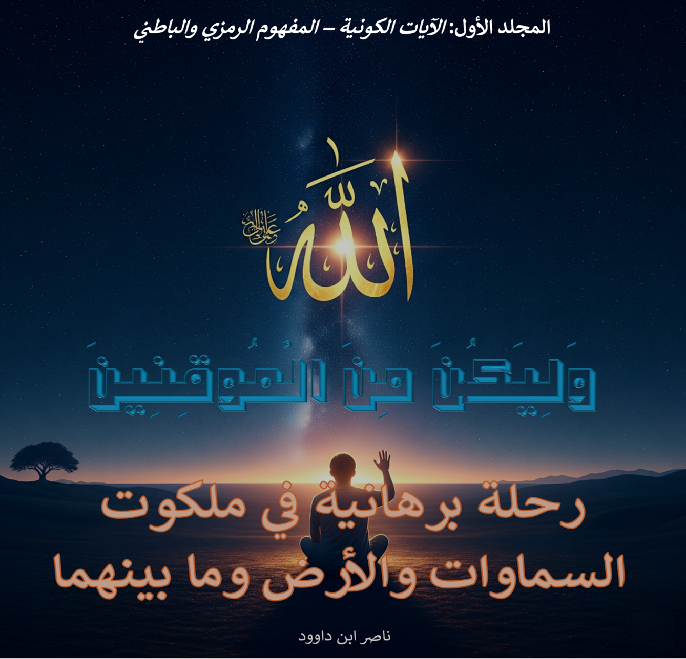

لمن هذا الكتاب؟
- الباحثون في الدراسات القرآنية والكونيات
- المهتمون بنقد النظريات العلمية الحديثة
- العلماء والمفكرون الإسلاميون
- طلاب العلم والدعاة
- كل باحث عن اليقين في زمن الشكوك
ملخص المقدمة
يقدم هذا الكتاب مشروعًا معرفيًا جذريًا لإعادة بناء الرؤية القرآنية للكون، بعيدًا عن الإسقاطات العلمية المعاصرة والقراءات الوعظية السطحية. ينطلق من مسلمة أن الآيات الكونية في القرآن ليست توصيفات مادية، بل خطاب هداية يربط بين الظاهر والباطن، ويحول الإيمان إلى يقين.
يستند المؤلف إلى منهج ثلاثي الأركان: البرهان النصي من القرآن والسنة، البرهان التاريخي من تراث الأمة، والبرهان الحسي والعقلي. ويهدف إلى تحرير العقل من "الجبال الزائفة" للنظريات الفلكية السائدة، وإعادة الإنسان إلى مركزه الكوني كما صوره القرآن.
الكتاب يمثل رحلة من الإيمان الموروث إلى اليقين المشهود، ودعوة للتحرر من المسلمات غير المفحوصة، برؤية تجمع بين التدبر العميق والنقد الجريء.
أقسام الكتاب الرئيسية
١. السماء والأرض بين الظاهر والباطن
تحليل الثنائية الكونية في الرؤية القرآنية
٢. حقيقة الكون ودور الإيمان
العلاقة بين اليقين والإدراك الحسي للكون
٣. المنهج الإبراهيمي
نموذج إبراهيم عليه السلام في بناء اليقين
٤. من الكون إلى الملكوت
الانتقال من المادة إلى المعنى في الرؤية القرآنية
٥. التدبر مفتاح المعرفة
فن القراءة المتأملة للآيات الكونية
٦. العرش والماء: الرموز الكونية
الدلالات العميقة للمفردات القرآنية
٧. الإنسان والمسؤولية الكونية
موقع الإنسان في المنظومة القرآنية
٨. نقد النموذج الكوني المعاصر
مواجهة التناقضات بين الوحي والنظريات السائدة
منهجية البحث
يعتمد الكتاب على منهجية ثلاثية الأركان:
- البرهان النصي: الاستناد إلى النصوص القرآنية الصريحة في وصف الكون
- البرهان التاريخي: تتبع الرؤية الكونية في تراث الأمة الإسلامية
- البرهان الحسي والعقلي: الاعتماد على المشاهدة المباشرة والمنطق الفطري